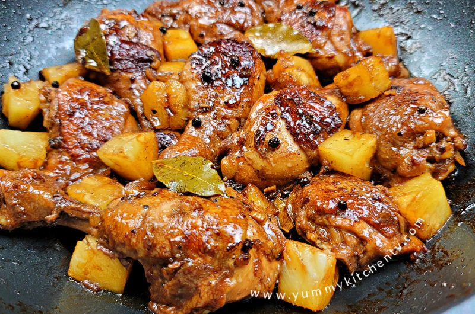

Adobo

DESCRIPTION
Chicken Adobo is a type of Filipino chicken stew. Chicken pieces are marinated in soy sauce and spices, pan-fried, and stewed until tender. The dish gained popularity because of its delicious taste and ease in preparation.
INGREDIENTS
- 1 tablespoon vegetable oil
- 6 bone-in, skinless chicken thighs
- 3 cloves garlic, minced
- ⅔ cup apple cider vinegar
- ⅓ cup soy sauce
- 1 teaspoon whole black peppercorns
- 1 bay leaf
STEPS
- Heat oil in a medium frying pan over medium-high heat. Add chicken and cook until lightly browned, about 5 minutes, then turn over and cook an additional 5 minutes. Transfer chicken to a plate and set aside.
- Pour off all but 1 tbsp. of pan drippings and return pan to low heat. Add garlic and sauté until soft, about 1 minute. Add remaining ingredients and stir to incorporate. Return chicken to pan and cook, covered, for 20 minutes.
- Uncover, increase heat to medium-low and cook 15 to 20 minutes more, occasionally spooning sauce over chicken, until sauce thickens a bit and chicken is tender and nicely glazed with sauce. Remove bay leaf before eating.